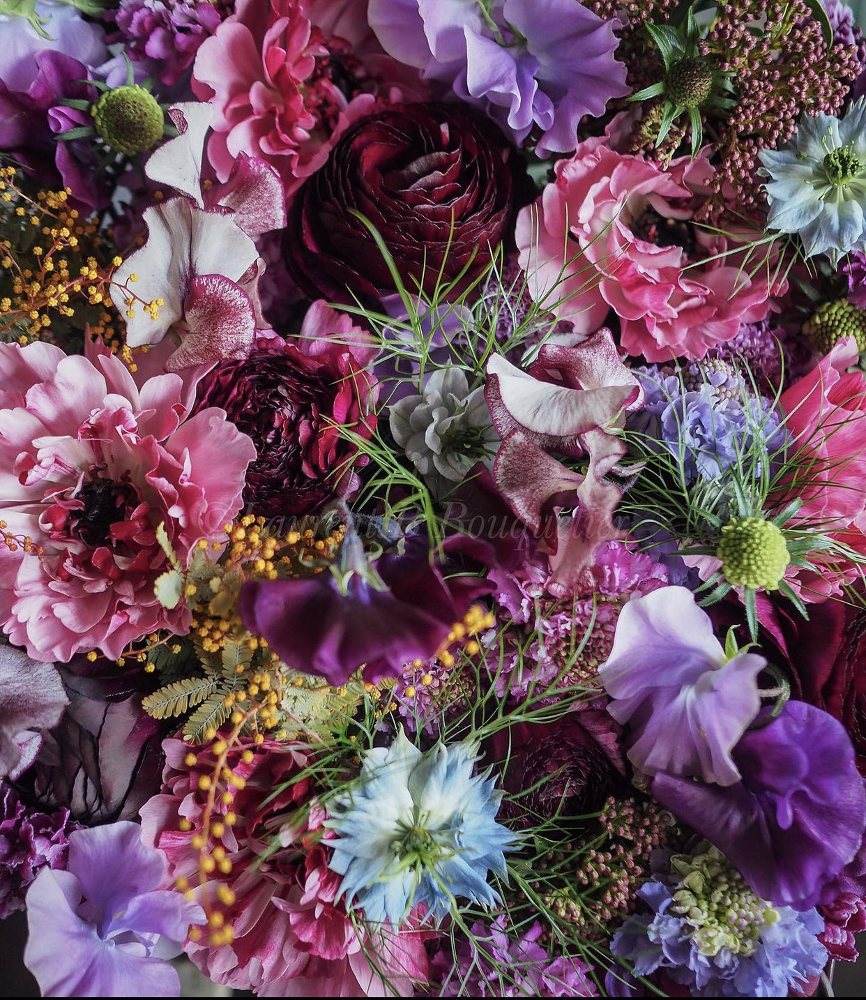
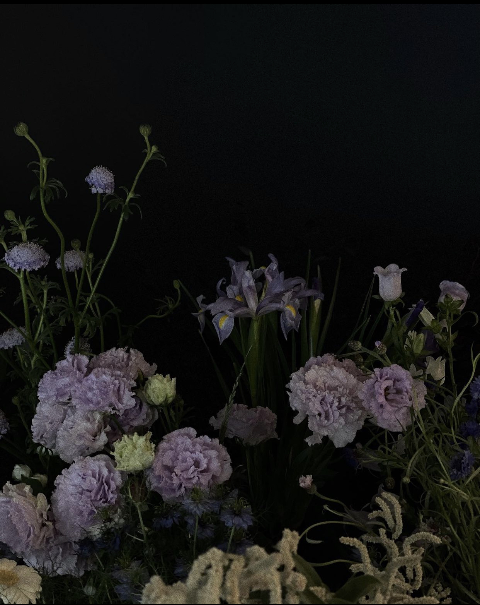
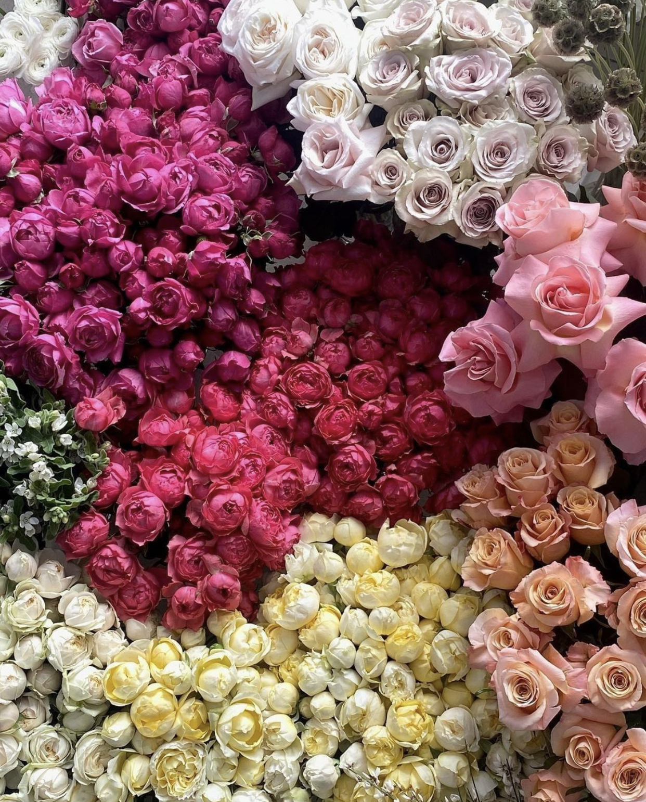
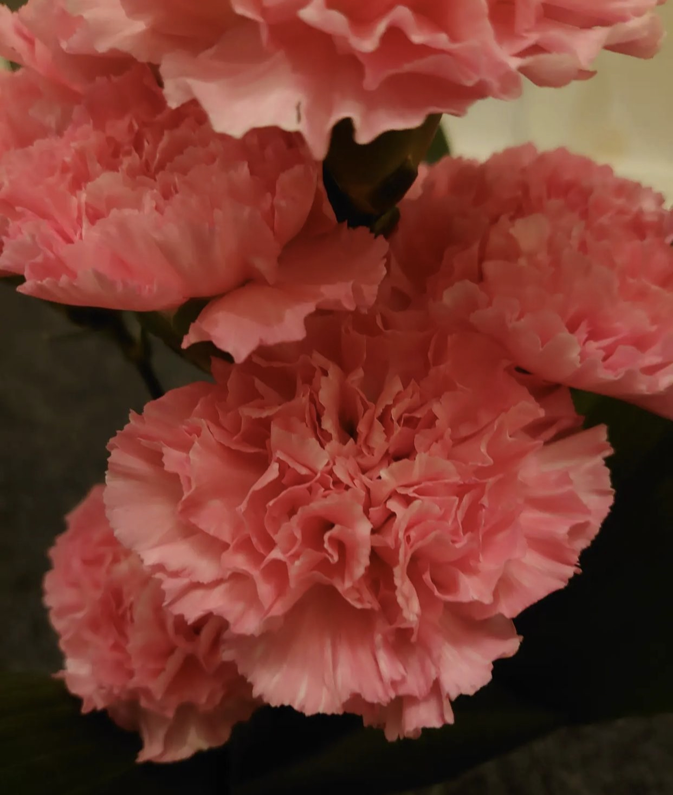
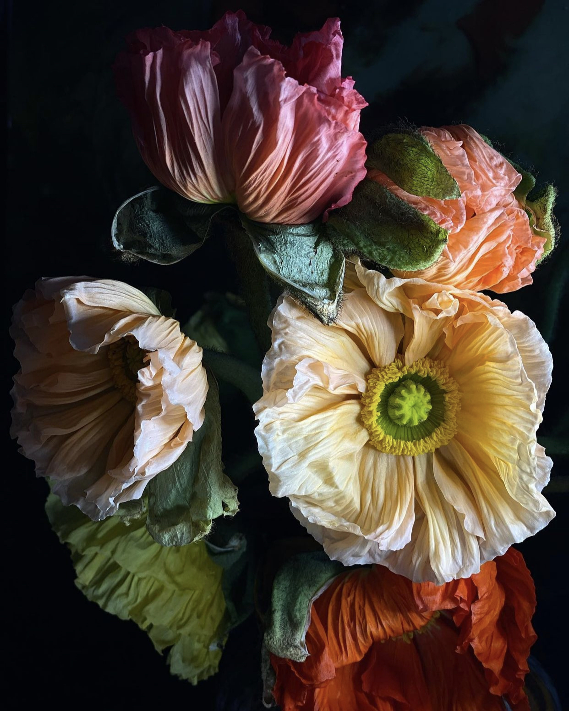

Flower Paradise



Since I was little flowers were very precious to me. I would alsways draw them and see a beauty in them. Even now when I am bored I start drawing flowers. They are very colorful and there colors bring me joy and clamness. As well as that each petal is unique so it is very interesting to look at very little line or the way the petals dent.
Here I collected 5 different images of flowers. I searched around instagram and was amazed what variety of images it had. I picked some of my favorite. Hope you enjoy.

